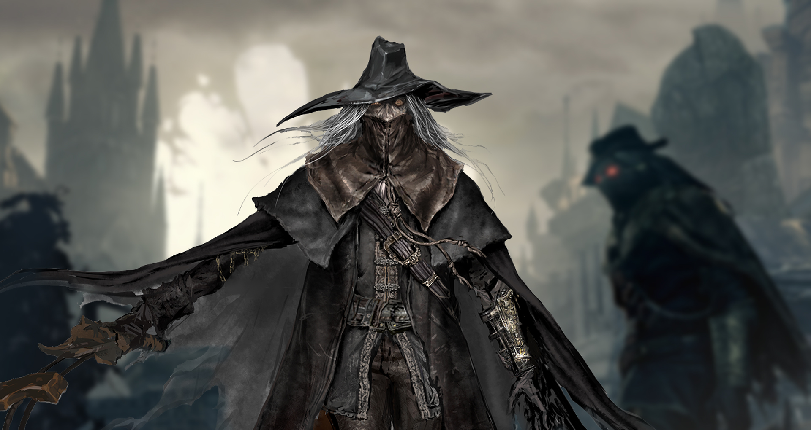

>Якщо тобі дадуть лінійований папір, пиши впоперек. Хуан Рамон Хімінес

web-ip-Hunt
Lost in Time
Castle
Life&Death Your CH
Witcher Doc Ideas and fiches
Witcher GoD project
No time
I/O
web-ip Alf X|S Academy
jarvis.html
oldIndex.html